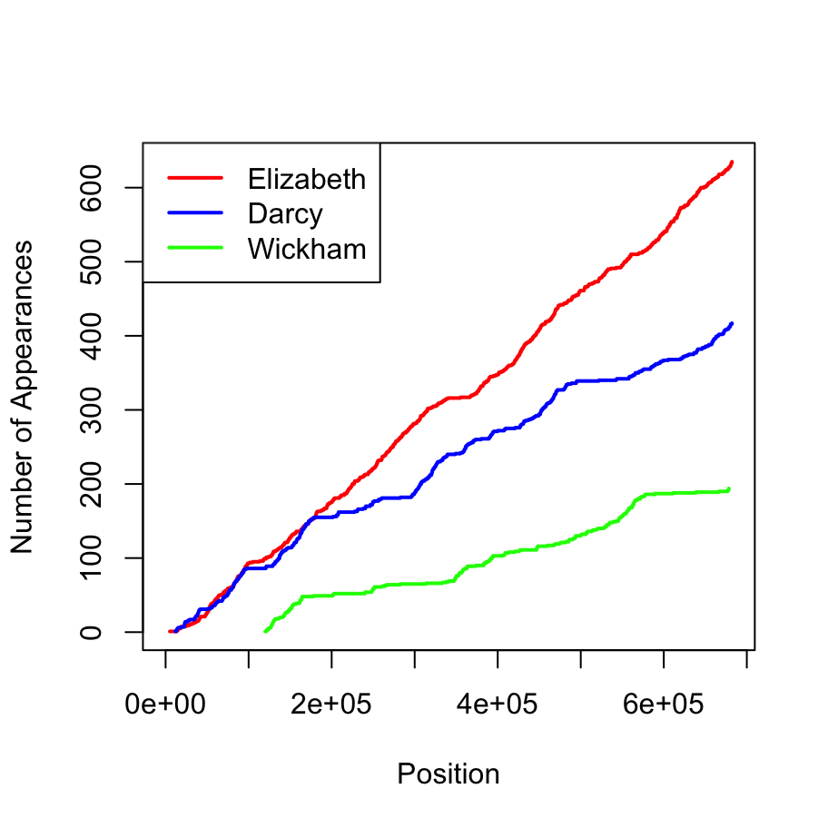

Yay! Now I have something nerdy to do that is fun … I will play around with the text of Pride and Prejudice while (finally!) taking a look at stringr. So, let’s do this! First, I’ll need one Jane Austen novel please!
pp <- janeaustenr::prideprejudice
pp[1:11]## [1] "PRIDE AND PREJUDICE"
## [2] ""
## [3] "By Jane Austen"
## [4] ""
## [5] ""
## [6] ""
## [7] "Chapter 1"
## [8] ""
## [9] ""
## [10] "It is a truth universally acknowledged, that a single man in possession"
## [11] "of a good fortune, must be in want of a wife."Check ✅ Next, I’ll need one text manipulation package:
library(stringr)That’s another check! ✅ ✅ Yay!!!!
I’m really happy upon looking at the documentation 📚. It’s really nicely structured. To quote straight from the package vignette:
There are four main families of functions in stringr:
- Character manipulation: these functions allow you to manipulate individual characters within the strings in character vectors.
- Whitespace tools to add, remove, and manipulate whitespace.
- Locale sensitive operations whose operations will vary from locale to locale.
- Pattern matching functions. These recognise four engines of pattern description. The most common is regular expressions, but there are three other tools.
… that’s promising! I guess I’ll just follow the vignette then 😸 and try out each category one at a time.
I feel like there’s an obvious joke to be made here about manipulative Jane Austen characters, but nothing is coming to mind, a sure sign that the viral infection has crossed the blood-brain barrier and I’m losing my mind. Neverthelesss…
As one might expect, the str_length function returns the length of a string, much like nchar in the base packages:
titletext <- c("Pride and Prejudice", "by Jane Austen")
str_length(string = titletext)## [1] 19 14The str_sub function is used to extract substrings from the string, and replace them with new values. In this function the substring is defined by the start and end of the substring:
str_sub(string = titletext, start = 4, end = 12)## [1] "de and Pr" "Jane Aust"So far, nothing too surprising. No wait, I tell a lie … you can use negative indices to define a position relative to the right edge of the string. So this would let me grab the last 8 characters of the string:
str_sub(string = titletext, start = -8, end = -1)## [1] "rejudice" "e Austen"Ooh that is very nice. You can also replace text using str_sub. So in this instance I can truncate the strings at 5 characters and then append "..."
str_sub(string = titletext, start = 6) <- "..."
titletext## [1] "Pride..." "by Ja..."Finally, the str_dup function lets you replicate the content within a string. So either of these works:
str_dup(string = titletext, times = 2)
str_dup(string = titletext, times = c(2,4))## [1] "Pride...Pride..." "by Ja...by Ja..."
## [1] "Pride...Pride..." "by Ja...by Ja...by Ja...by Ja..."Very nice.
… and we’re back! The str_pad function adds whitespace padding to ensure that the string reaches a particular length:
str_pad(string = titletext, width = 20)
str_pad(string = titletext, width = 20, side = "right")
str_pad(string = titletext, width = 20, side = "both")
str_pad(string = titletext, width = 20, side = "both", pad = "-")## [1] " Pride..." " by Ja..."
## [1] "Pride... " "by Ja... "
## [1] " Pride... " " by Ja... "
## [1] "------Pride...------" "------by Ja...------"Combining str_pad and str_trunc means that you can force strings to be exactly a desired length, but padding one and truncating the other. Similarly, you can use str_trim to remove padding from one or both sides. For me favourite of these functions, it’s a toss up between (a) str_squish, which removes all excess white space, whether it be leading, middle or trailing…
titletext <- " Pride and Prejudice
by Jane Austen "
str_squish(titletext)## [1] "Pride and Prejudice by Jane Austen"or (b) str_wrap, which tries to modify the white space to ensure that every line is approximately the same width:
ppstart <- "Pride and Prejudice by Jane Austen. It is a truth universally acknowledged, that a single man in possession of a good fortune, must be in want of a wife."
cat(str_wrap(string = ppstart, width = 20))## Pride and Prejudice
## by Jane Austen.
## It is a truth
## universally
## acknowledged, that
## a single man in
## possession of a good
## fortune, must be in
## want of a wife.It even lets you specify the indent and exdent of the output string, so you can have margins!
Okay, reading through the vignette further, the str_to_upper, str_to_lower and str_to_title functions do exactly what they say on the tin, but the package documentation is at pains to point out that they will give you different answers depending on where you are, as will sorting functions like str_order and str_sort. Makes perfect sense: alphabets and the ordering of characters within the alphabets vary from place to place, so it’s really nice that these are locale-sensitive. Natural language is messy.
Okay, pattern matching time. My nightmares about grep have mostly settled down in my old age, and it’s refreshing to read something pertaining to regular expressions without bursting into tears! And I really like the way the pattern matching functions are organised in stringr. We have functions that specify tasks.
For the sake of helping my own learning, I’ll type out what they do:
str_detect finds all strings that match the pattern and returns a logical vector indicating whether they matchstr_subset is similar, but it returns the subset of matching stringsstr_count returns a numeric vector containing the number of times each string matches the patternstr_locate returns the positions within the string of the first match, and str_locate_all returns the positions of all matches stringstr_extract returns the matches themselves (first match within a string) and str_extract_all returns all of the matches.str_match and str_match_all are similar, but they return the matches split by the groups. (see the vignette for the examples!)str_replace and str_replace_all allow you to manipulate the matches, very much the same way that sub and gsub do.str_split breaks a string by a separating character; and there’s also the str_split_fixed function that breaks it into a fixed number of chunks.Okay, a lot of that feels very familiar, and it’ll probably take a bit of getting used to, but I like the overall structure here. I think after a bit of playing it will be really natural.
The thing I really like, though, is the fact that the engine that defines what counts as a pattern is broken up into convenience functions:
fixed pattern matches the exact pattern (sequence of bytes)coll pattern is a little more flexible, and recognises that the same character (in human reading terms) can be represented in different ways, which is useful if you’re using non-English charactersboundary pattern can match the breaks between words, lines, characters, or sentences. Where by convention "" is treated as meaning boundary("character")regex (the default) is a regular expressionThat feels much cleaner than what I’m used to.
Okay so let’s see if I understand this. Suppose I want to take the start of Pride and Prejudice, as per the ppstart string, and split it up by word, character, or sentence:
str_split(string = ppstart, pattern = boundary("word"))
str_split(string = ppstart, pattern = boundary("character"))
str_split(string = ppstart, pattern = boundary("sentence"))## [[1]]
## [1] "Pride" "and" "Prejudice" "by"
## [5] "Jane" "Austen" "It" "is"
## [9] "a" "truth" "universally" "acknowledged"
## [13] "that" "a" "single" "man"
## [17] "in" "possession" "of" "a"
## [21] "good" "fortune" "must" "be"
## [25] "in" "want" "of" "a"
## [29] "wife"
##
## [[1]]
## [1] "P" "r" "i" "d" "e" " " "a" "n" "d" " " "P" "r" "e" "j" "u" "d" "i"
## [18] "c" "e" " " "b" "y" " " "J" "a" "n" "e" " " "A" "u" "s" "t" "e" "n"
## [35] "." " " "I" "t" " " "i" "s" " " "a" " " "t" "r" "u" "t" "h" " " "u"
## [52] "n" "i" "v" "e" "r" "s" "a" "l" "l" "y" " " "a" "c" "k" "n" "o" "w"
## [69] "l" "e" "d" "g" "e" "d" "," " " "t" "h" "a" "t" " " "a" " " "s" "i"
## [86] "n" "g" "l" "e" " " "m" "a" "n" " " "i" "n" " " "p" "o" "s" "s" "e"
## [103] "s" "s" "i" "o" "n" " " "o" "f" " " "a" " " "g" "o" "o" "d" " " "f"
## [120] "o" "r" "t" "u" "n" "e" "," " " "m" "u" "s" "t" " " "b" "e" " " "i"
## [137] "n" " " "w" "a" "n" "t" " " "o" "f" " " "a" " " "w" "i" "f" "e" "."
##
## [[1]]
## [1] "Pride and Prejudice by Jane Austen. "
## [2] "It is a truth universally acknowledged, that a single man in possession of a good fortune, must be in want of a wife."If I wanted to break it up by vowels, I could define a regular expression to do the job:
ppstart %>%
str_split(pattern = regex("[aeiouAEIOU]")) %>%
str_wrap(width = 80) %>%
cat## Warning in stri_split_lines(str): argument is not an atomic vector;
## coercing## c("Pr", "d", " ", "nd Pr", "j", "d", "c", " by J", "n", " ", "", "st", "n. ",
## "t ", "s ", " tr", "th ", "n", "v", "rs", "lly ", "ckn", "wl", "dg", "d, th", "t
## ", " s", "ngl", " m", "n ", "n p", "ss", "ss", "", "n ", "f ", " g", "", "d f",
## "rt", "n", ", m", "st b", " ", "n w", "nt ", "f ", " w", "f", ".")where the calls to str_wrap and cat are there solely to make the output fit on the blog page, and the call to regex is redundant since the stringr package assumes by default that the pattern is a regular expression.
If I wanted to disemvowel Jane Austen, it looks like I can use str_remove as a handy alias for str_replace with replace = "". If I want to get rid of all the vowels rather than just one…
ppstart %>%
str_remove_all(pattern = "[aeiouAEIOU]") %>%
str_squish %>%
str_wrap(width = 80) %>%
cat## Prd nd Prjdc by Jn stn. t s trth nvrslly cknwldgd, tht sngl mn n pssssn f gd
## frtn, mst b n wnt f wf.Okay, so now I should be able to do neat things with the whole novel. Let’s start by gluing the pp vector into one long string, since the line breaks don’t seem to appear at any interesting locations
library(glue)##
## Attaching package: 'glue'## The following object is masked from 'package:dplyr':
##
## collapsepp %<>%
glue_collapse(sep=" ") %>%
str_squish
pp %>%
str_sub(start = 1, end = 500) %>%
str_wrap(width = 80) %>%
cat## PRIDE AND PREJUDICE By Jane Austen Chapter 1 It is a truth universally
## acknowledged, that a single man in possession of a good fortune, must be in want
## of a wife. However little known the feelings or views of such a man may be on
## his first entering a neighbourhood, this truth is so well fixed in the minds of
## the surrounding families, that he is considered the rightful property of some
## one or other of their daughters. "My dear Mr. Bennet," said his lady to him one
## day, "have you heard that NetherOkay, so now I want to give myself something to do with this. I’m tired and sick and I can’t think of anything clever, so I’ll just try and locate every appearance of the words "Elizabeth", "Darcy" and "Wickham" in the text:
elizabeth <- str_locate_all(pp, fixed("Elizabeth"))[[1]][,1]
darcy <- str_locate_all(pp, fixed("Darcy"))[[1]][,1]
wickham <- str_locate_all(pp, fixed("Wickham"))[[1]][,1]And now I will defy all sense (and offend my own sensibilities) by drawing a graph of this using some extraordinarily unsatisfying code:
plot(elizabeth, 1:length(elizabeth), xlab="Position",
ylab="Number of Appearances", xlim=c(0,str_length(pp)), lwd=2,
col="red", type="s")
lines(darcy, 1:length(darcy), col="blue", lwd=2, type="s")
lines(wickham, 1:length(wickham), col="green", lwd=2, type="s")
legend(x = "topleft", legend = c("Elizabeth", "Darcy", "Wickham"),
col = c("red","blue","green"), lwd=2) No surprises there: Elizabeth occurs most frequently, and at the most uniform rate. At the start of the book Darcy appears just as often, but then there are sections of the book that don’t concern him and the function flatlines for a while. Wickham is absent more often than not.